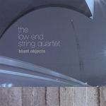

Low End String Quartet Blunt Objects
(Improv Arts)
Here’s a theory: a merger of classical composition and rock music does not have to suck. Just in 2009 there have been at least two examples to support this claim, and now The Low End String Quartet, led by guitarist and composer Jonathan Matis, has tried to make its own contribution. Sunn O))) offered a record with symphonic ambitions, culminating in a closing piece that brought the twentieth century minimalism at the heart of the album to its logical conclusion and even added the afterglow of Miles Davis’s In A Silent Way (a comparison made by our own Sean Caldwell in his review). This year also saw the return of The Bad Plus, a band that exists somewhere between a post-genre experiment and a conservatory student’s inside joke. Often erroneously referred to simply as a jazz combo (they stretch their conception of jazz to cover songs by the whitest of white bands, such as Wilco, Heart, and Aphex Twin), the band released For All I Care, which borrows more from Ligeti than it does from Lester Young, even going as far as to record Babbitt’s Semi-Simple Variations. Their use of dissonance and sudden tempo changes – devices found in the deltas of both jazz and classical music – make Nirvana’s Lithium stagger like Courtney Love after a talk show appearance. That said, The Low End String Quartet’s Blunt Objects leaves much to be desired, and it has nothing to do with pretension.
Paintbrush opens with droning guitar strings that sound like light Sonic Youth as re-imagined by Philip Glass. The violn and cello pluck and weave their way around each other as if skating on a frozen lake of guitar chords. In live performance, no doubt, every instrument is amplified, but that does not come across on the record. Overdrive, in this case, has more to do with timbre than volume. John Cale’s steel-strung violin screamed through tracks like Venus in Furrs and Heroin, often because the instrument sounded as if it was hell-bent on its own destruction. The instruments in Low End String Quartet, however, sound too self-respecting to create the serious noise the ensemble needs. Even as the bass on Mystery Snail (so aptly named it’s depressing) wades through twelve-tone melodies like Shoenberg drunkenly trying to walk in a straight line for a sobriety test, there’s little to enjoy. That is, until the bassist turns on the wah-pedal and uses it as if laughing at (not crying for) classical music.
Rondo builds on a folky pedal-point line doubled by guitar and violin. The melody is fine, but – perhaps in an understandable effort to sound unlike Yngwie Malmsteen – the Matis’s guitar’s slightly distorted tone makes it sound as if it’s being played through a practice amp. This piece must be played at painful volumes to avoid sounding like elevator music. A contrastingly peaceful outro emerges in which Matis lets simple chords ring out over the ringing G-string. Metal is one of the most awkward tracks on the disc, perhaps because the minimalism goes too far. The distorted upright bass bangs away at the root in quarter notes, occasionally scooting up – in an bit of a Black Sabbath-esque imaginativeness – to the minor third, while the guitar executes some sub-Reload Metallica riffage. Unfortunately, it's metal-by-numbers.
The noise intro to Shut Up and Listen (which sounds a little like a John Cage experiment) gives way to another droned-out guitar figure. Matis told the Baltimore City Paper that one of his inspirations for the project was Sunn O))), and he admitted he missed the mark. This track, in fact, actually bears some resemblance to Alice from Monoliths and Dimensions and is thus one of the strongest pieces here. The bass does what the drop-B tuned guitars do on doom metal albums: provide the volume and overtones on which the rest of the music can build. With the pace of plate tectonics, the piece rises and falls in a huge bell curve, and that makes for a satisfying listen. With the rest of the album, pretension is not the problem. Even the Velvet Underground, as Alex Ross hammers home in The Rest is Noise, derived its ideas from twentieth century avant-garde composers. Artists from The Bad Plus to Frank Zappa have stirred the melting pot in such a way that their product comes off as intrusive – even rude, at times. But The Low End String Quartet’s Blunt Objects, in contrast, is too polite to leave an impact.
17 November, 2009 - 09:58 — Ryan Faughnder